Kiến trúc độc đáo
Cột đá duy nhất
Toàn bộ ngôi chùa được đặt trên một cột đá duy nhất có đường kính khoảng 1,2 mét, vươn lên từ giữa hồ nước hình vuông. Cột đá tượng trưng cho cuống sen, nâng đỡ đài hoa sen phía trên.
Đài sen trên cao
Phần chùa phía trên có hình vuông, mỗi cạnh khoảng 3 mét, mái cong theo kiểu kiến trúc truyền thống Việt Nam. Bên trong đặt tượng Phật Bà Quan Âm được sơn son thếp vàng.
Hồ nước Linh Chiểu
Hồ Linh Chiểu hình vuông bao quanh cột đá, với hoa sen nở vào mùa hạ, tạo nên khung cảnh thơ mộng và thanh tịnh. Mặt nước phản chiếu hình ảnh ngôi chùa tạo nên vẻ đẹp huyền ảo.
Bậc thang lên chùa
Lối lên chùa là một cầu thang gạch nhỏ dẫn từ bờ hồ lên đến sàn chùa. Du khách có thể bước lên để chiêm ngưỡng tượng Phật và không gian thiêng liêng bên trong.
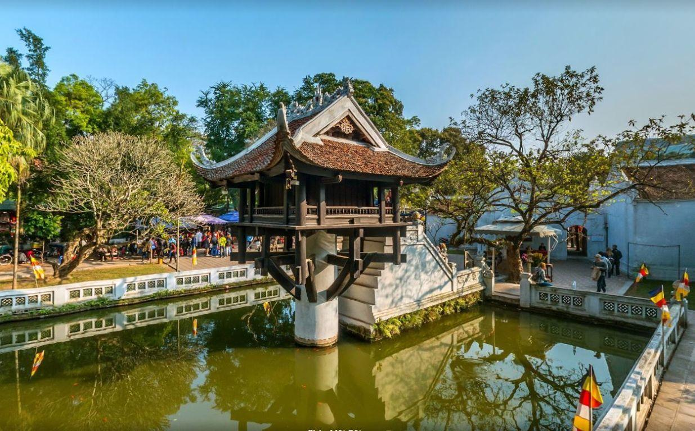
Thư viện ảnh
Hãy cùng chiêm ngưỡng vẻ đẹp của Chùa Một Cột qua từng góc ảnh.
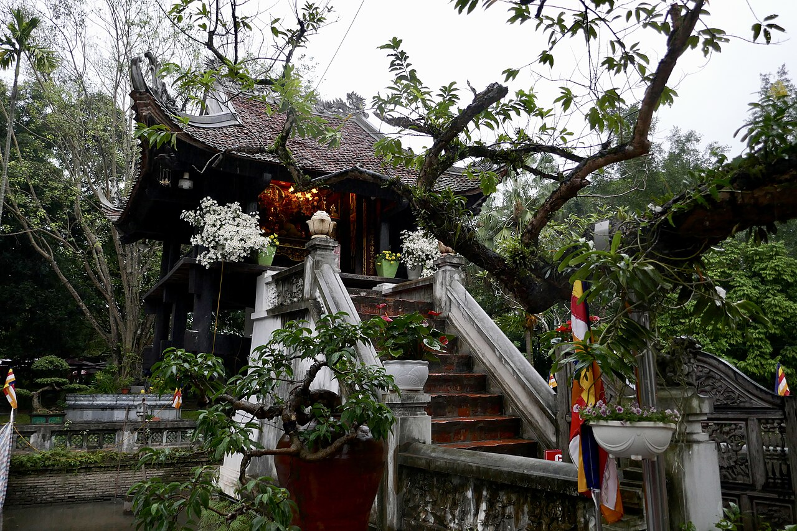
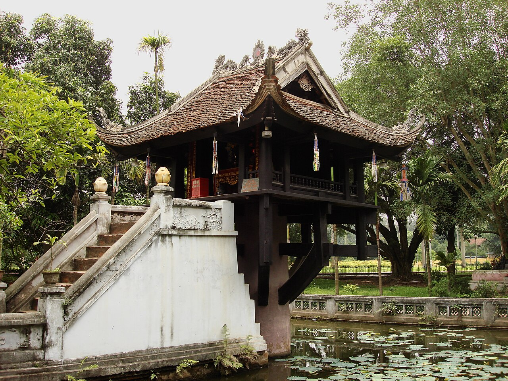
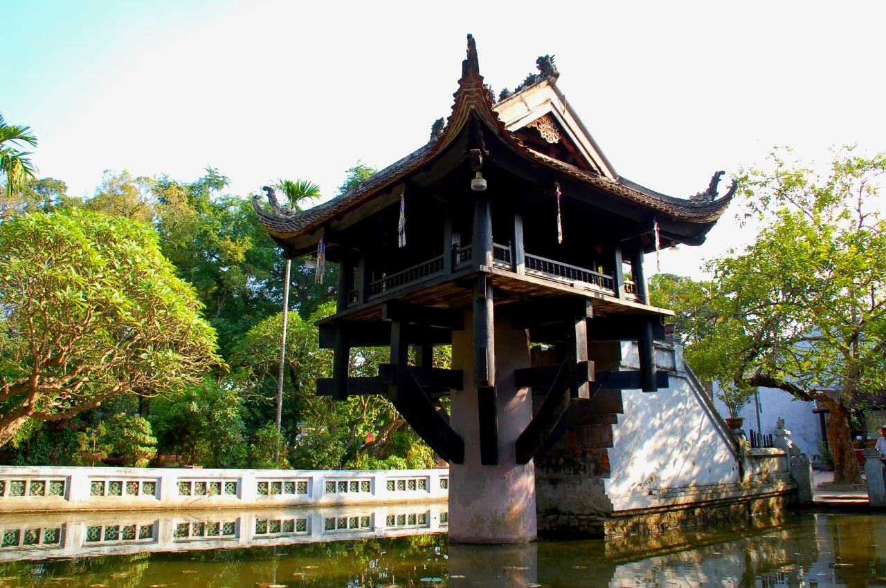
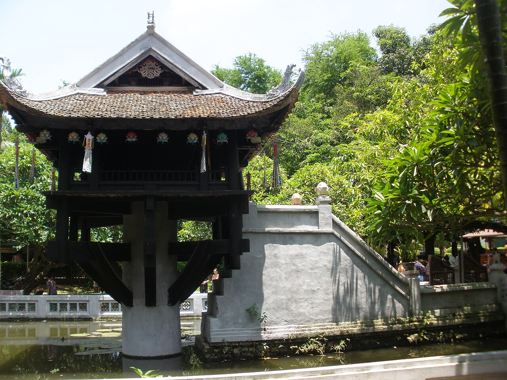
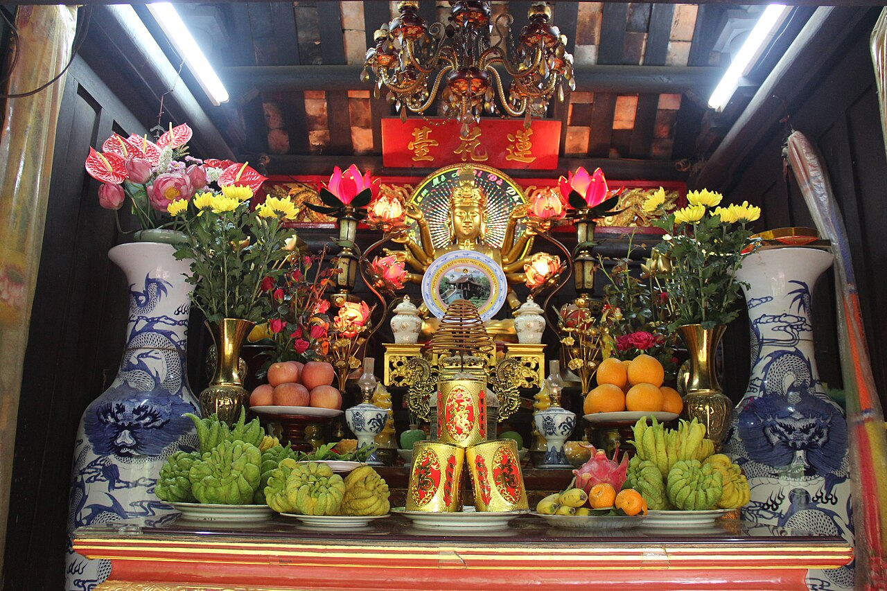
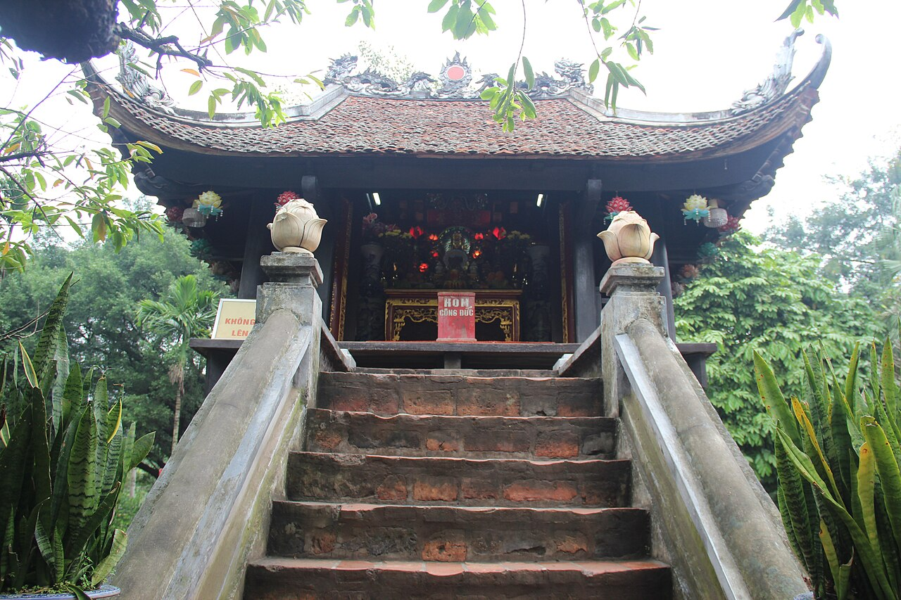
Góc check-in
Những vị trí chụp ảnh đẹp nhất tại Chùa Một Cột và khu vực xung quanh.
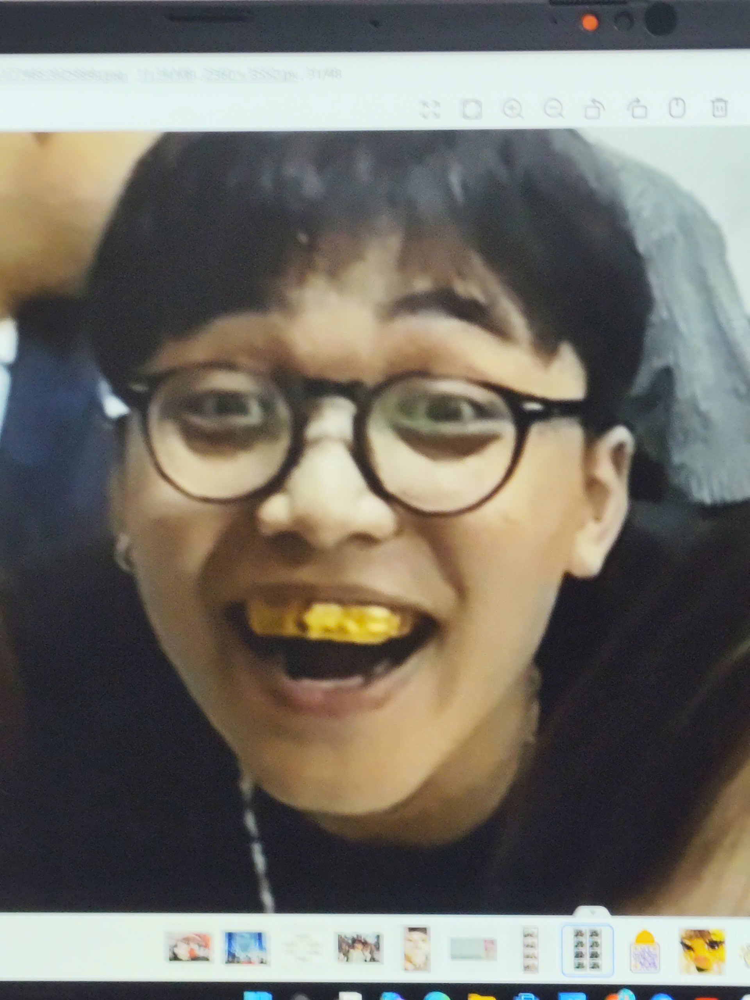
🌅 Phía trước hồ Linh Chiểu
Đứng phía trước hồ để chụp toàn cảnh chùa phản chiếu trên mặt nước. Thời điểm đẹp nhất là buổi sáng sớm hoặc chiều muộn khi ánh nắng dịu nhẹ.
🕐 Sáng sớm / Chiều muộn🪷 Góc hoa sen
Vào mùa hè (tháng 6-7), hoa sen nở rộ quanh hồ. Đây là thời điểm lý tưởng để chụp ảnh chùa cùng hoa sen – biểu tượng Phật giáo Việt Nam.
🕐 Tháng 6 – Tháng 7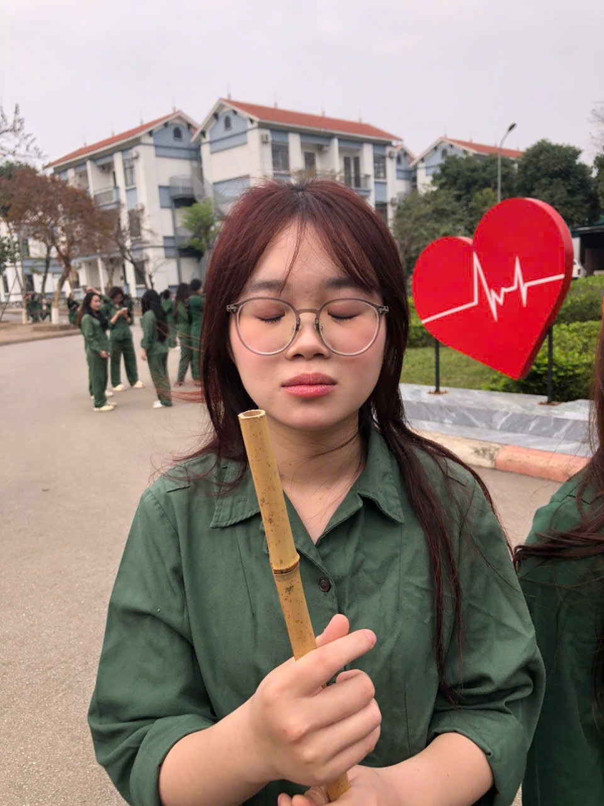
🌳 Khuôn viên vườn cây
Khuôn viên xung quanh chùa có nhiều cây xanh tạo bóng mát. Góc chụp từ dưới tán cây nhìn lên chùa sẽ tạo ra những bức ảnh rất nghệ thuật.
🕐 Cả ngày🏛️ Bậc thang lên chùa
Chụp từ chân cầu thang nhìn lên, hoặc từ trên chùa nhìn xuống hồ để có góc ảnh tạo chiều sâu và trang nghiêm.
🕐 Cả ngàyKhám phá ẩm thực
Sau chuyến tham quan Chùa Một Cột, hãy dành thời gian khám phá những hương vị đặc trưng của Hà Nội qua các món ăn truyền thống và những địa điểm ẩm thực đáng trải nghiệm.
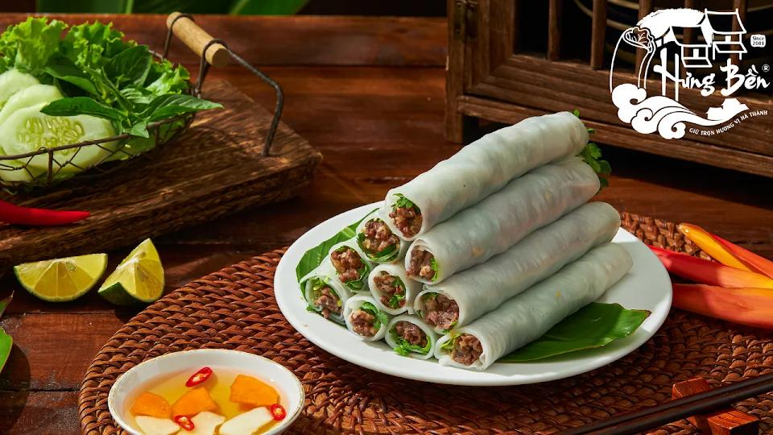
Phở cuốn Hưng Bền
assets/images/Am_thuc_1.jpg
Phở cuốn Hưng Bền
Thưởng thức món phở cuốn nổi tiếng của khu Ngũ Xã với bánh phở mềm, thịt bò và rau thơm ăn kèm nước chấm.
118 phố Trấn Vũ, Ba Đình, Hà Nội
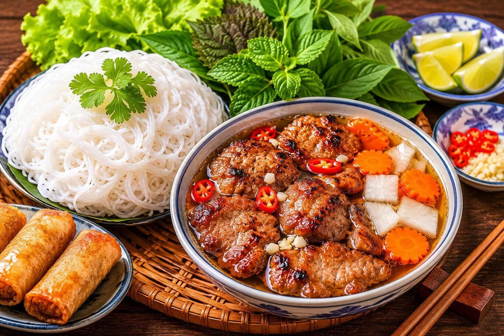
Tuyết Bún Chả 34
assets/images/Am_thuc_2.jpg
Tuyết Bún Chả 34
Bún chả Hà Nội với thịt nướng thơm, bún tươi, rau sống và nước chấm chua ngọt.
34 Nguyễn Trung Trực, Ba Đình, Hà Nội
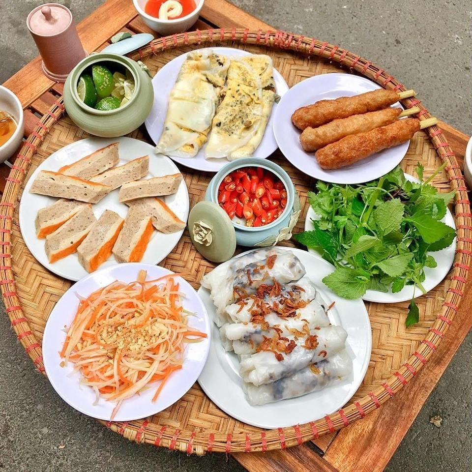
Gà tần - Bánh cuốn nóng
assets/images/Am_thuc_3.jpg
Gà tần - Bánh cuốn nóng
Trải nghiệm món bánh cuốn nóng được tráng tại chỗ và món gà tần mang hương vị truyền thống.
43 Nguyễn Như Đổ, khu Văn Miếu, Hà Nội
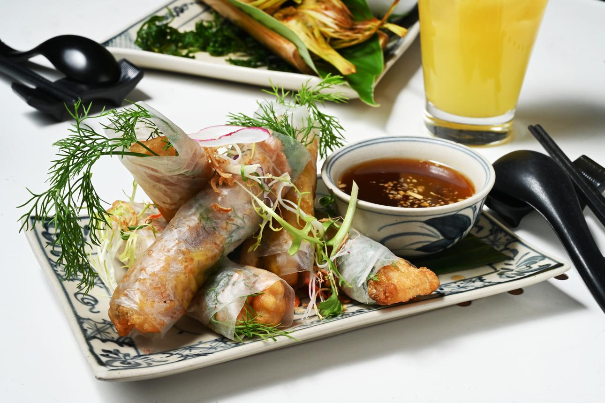
KOTO Văn Miếu
assets/images/Am_thuc_4.jpg
KOTO Văn Miếu
Nhà hàng giới thiệu ẩm thực Việt Nam trong không gian hiện đại, đồng thời kết hợp hoạt động đào tạo nghề nhà hàng – khách sạn cho thanh thiếu niên.
35 Văn Miếu, Đống Đa, Hà Nội
Khám phá Chùa Một Cột qua video
Cùng khám phá lịch sử, kiến trúc độc đáo và vẻ đẹp văn hóa của Chùa Một Cột qua những thước phim.
Thông tin tham quan
Địa chỉ
Phố Chùa Một Cột, Phường Đội Cấn, Quận Ba Đình, Hà Nội
Giờ tham quan
Hàng ngày: 7:00 – 18:00
Miễn phí vé vào cửa
Di chuyển
Xe buýt: Tuyến 09, 18, 22, 45
Gần Lăng Chủ tịch Hồ Chí Minh
Lưu ý
Ăn mặc lịch sự, kín đáo khi vào khu vực chùa. Không gây ồn ào.